2D Quantitative Data
2024-09-11
Reminders, previously, and today…
HW2 is due TONIGHT!
HW3 is posted and due next Wednesday Sept 18th
Finished up discussion of 1D quantitative visualizations
Discussed impact of bins on histograms
Covered ECDFs and connection to KS-tests
Walked through density estimation and ways of visualizing conditional distributions
TODAY:
Visualize 2D quantitative data
Discuss approaches for visualizing conditional and joint distributions
2D quantitative data
- We’re working with two variables: \((X, Y) \in \mathbb{R}^2\), i.e., dataset with \(n\) rows and 2 columns
Goals:
describing the relationships between two variables
describing the conditional distribution \(Y | X\) via regression analysis
describing the joint distribution \(X,Y\) via contours, heatmaps, etc.
Few big picture ideas to keep in mind:
scatterplots are by far the most common visual
regression analysis is by far the most popular analysis (you have a whole class on this…)
relationships may vary across other variables, e.g., categorical variables
Making scatterplots with geom_point()

Making scatterplots: ALWAYS adjust the alpha
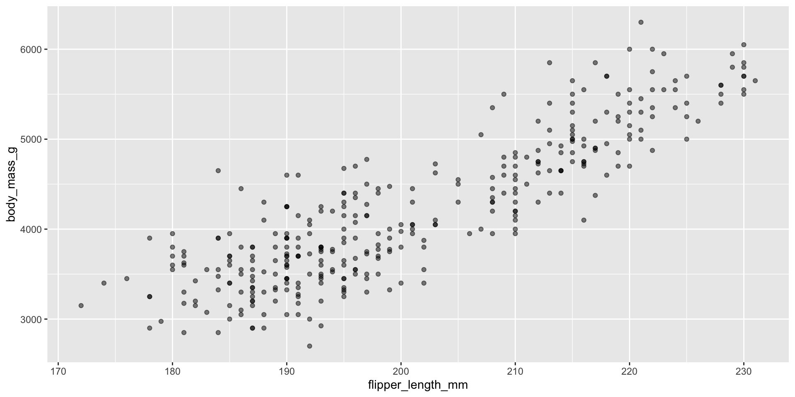
Displaying trend lines: linear regression
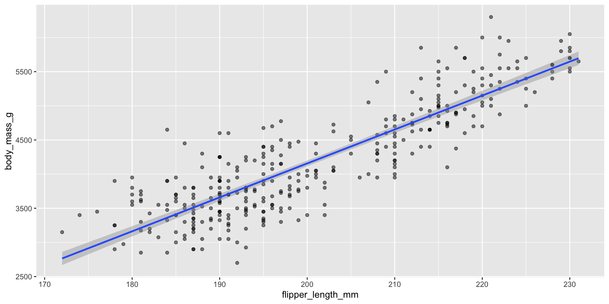
Assessing assumptions of linear regression
Linear regression assumes \(Y_i \overset{iid}{\sim} N(\beta_0 + \beta_1 X_i, \sigma^2)\)
- If this is true, then \(Y_i - \hat{Y}_i \overset{iid}{\sim} N(0, \sigma^2)\)
Plot residuals against \(\hat{Y}_i\), residuals vs fit plot
Used to assess linearity, any divergence from mean 0
Used to assess equal variance, i.e., if \(\sigma^2\) is homogenous across predictions/fits \(\hat{Y}_i\)
More difficult to assess the independence and fixed \(X\) assumptions
- Make these assumptions based on subject-matter knowledge
Residual vs fit plots
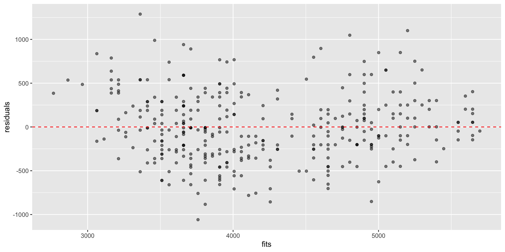
Residual vs fit plots
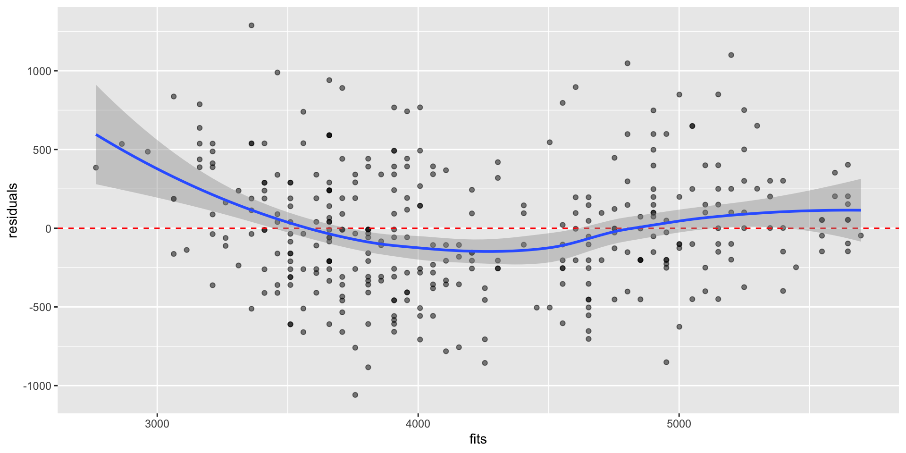
Local linear regression via LOESS
\(Y_i \overset{iid}{\sim} N(f(x), \sigma^2)\), where \(f(x)\) is some unknown function
In local linear regression, we estimate \(f(X_i)\):
\[\text{arg }\underset{\beta_0, \beta_1}{\text{min}} \sum_i^n w_i(x) \cdot \big(Y_i - \beta_0 - \beta_1 X_i \big)^2\]
geom_smooth() uses tri-cubic weighting:
\[w_i(d_i) = \begin{cases} (1 - |d_i|^3)^3, \text{ if } i \in \text{neighborhood of } x, \\ 0 \text{ if } i \notin \text{neighborhood of } x \end{cases}\]
\(d_i\) is the distance between \(x\) and \(X_i\) scaled to be between 0 and 1
span: decides proportion of observations in neighborhood (default is 0.75)
Displaying trend lines: LOESS
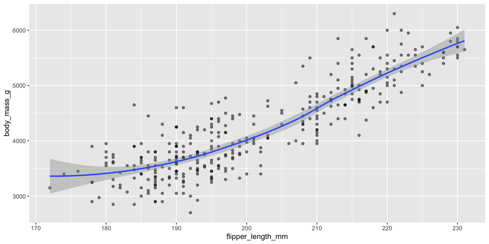
For \(n > 1000\), mgcv::gam() is used with formula = y ~ s(x, bs = "cs") and method = "REML"
Displaying trend lines: LOESS
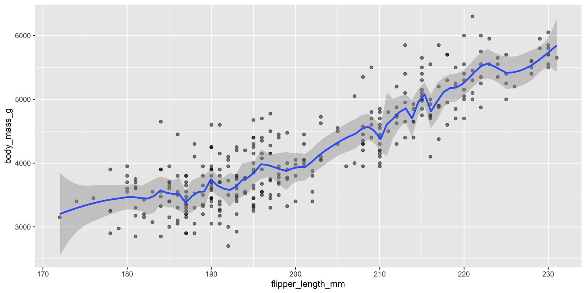
Can also update formula within plot
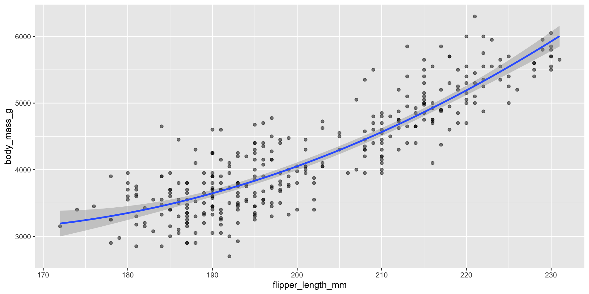
Exercise: check the updated residual plot with this model
What about focusing on the joint distribution?
Example dataset of pitches thrown by baseball superstar Shohei Ohtani
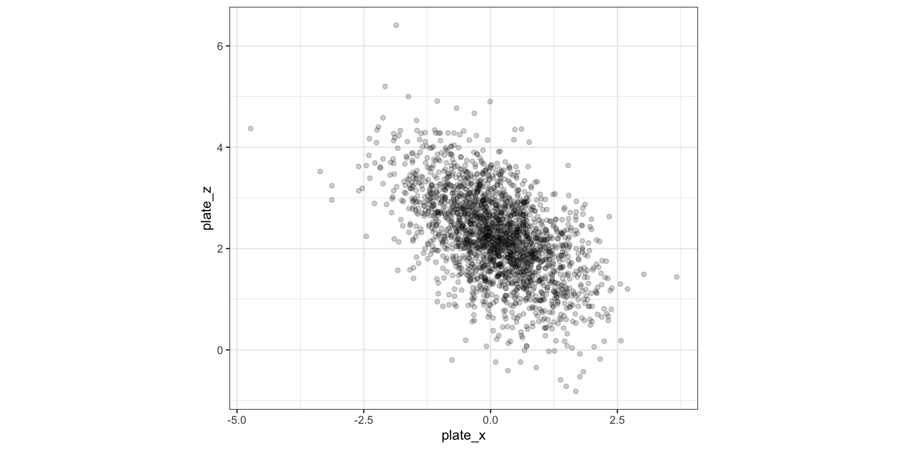
Going from 1D to 2D density estimation
In 1D: estimate density \(f(x)\), assuming that \(f(x)\) is smooth:
\[ \hat{f}(x) = \frac{1}{n} \sum_{i=1}^n \frac{1}{h} K_h(x - x_i) \]
In 2D: estimate joint density \(f(x_1, x_2)\)
\[\hat{f}(x_1, x_2) = \frac{1}{n} \sum_{i=1}^n \frac{1}{h_1h_2} K(\frac{x_1 - x_{i1}}{h_1}) K(\frac{x_2 - x_{i2}}{h_2})\]
In 1D there was one bandwidth, now we have two bandwidths
- \(h_1\): controls smoothness as \(X_1\) changes, holding \(X_2\) fixed
- \(h_2\): controls smoothness as \(X_2\) changes, holding \(X_1\) fixed
Again Gaussian kernels are the most popular…
So how do we display densities for 2D data?

How to read contour plots?
Best known in topology: outlines (contours) denote levels of elevation

Display 2D contour plot
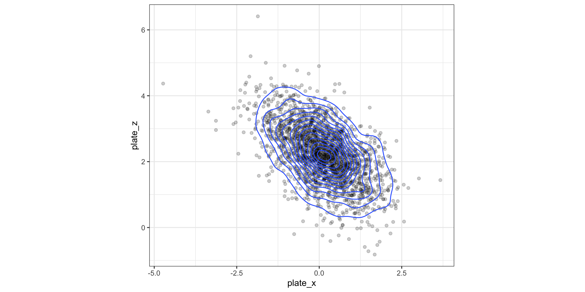
Display 2D contour plot
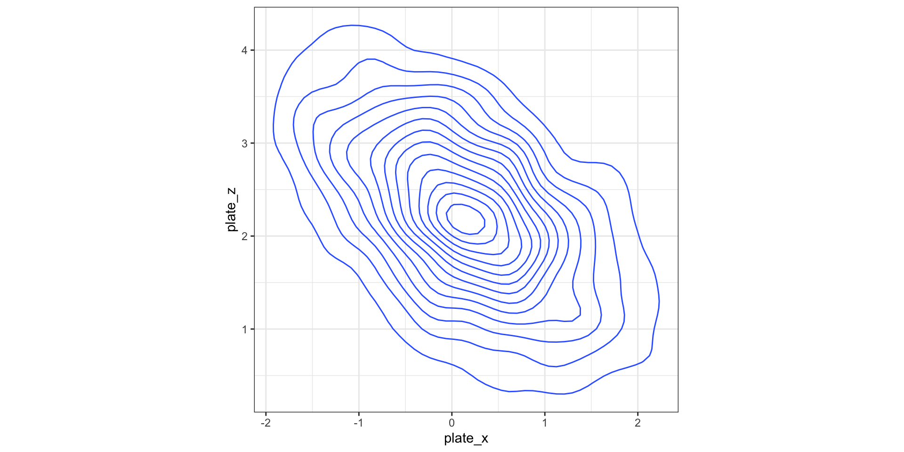
Display 2D contour plot
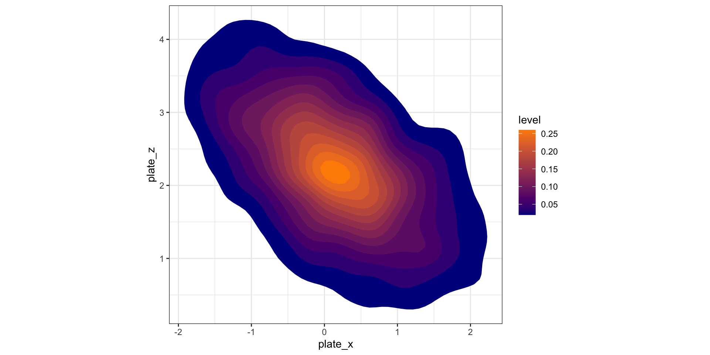
Visualizing grid heat maps
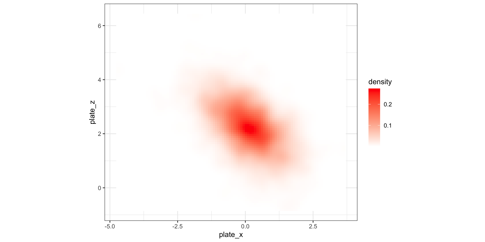
Alternative idea: hexagonal binning
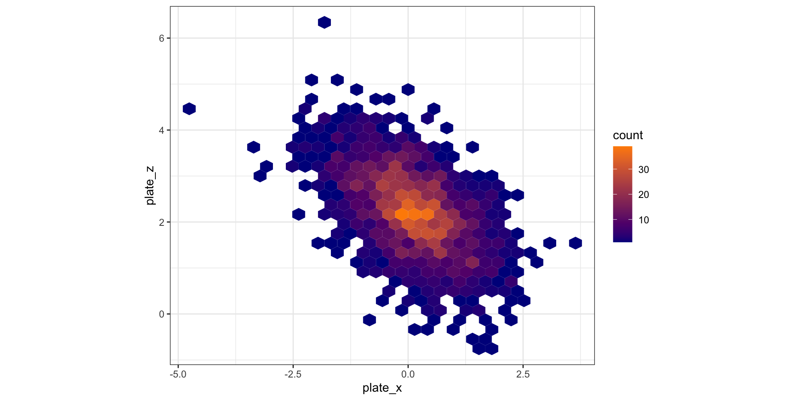
LeBron James’ shots from hoopR
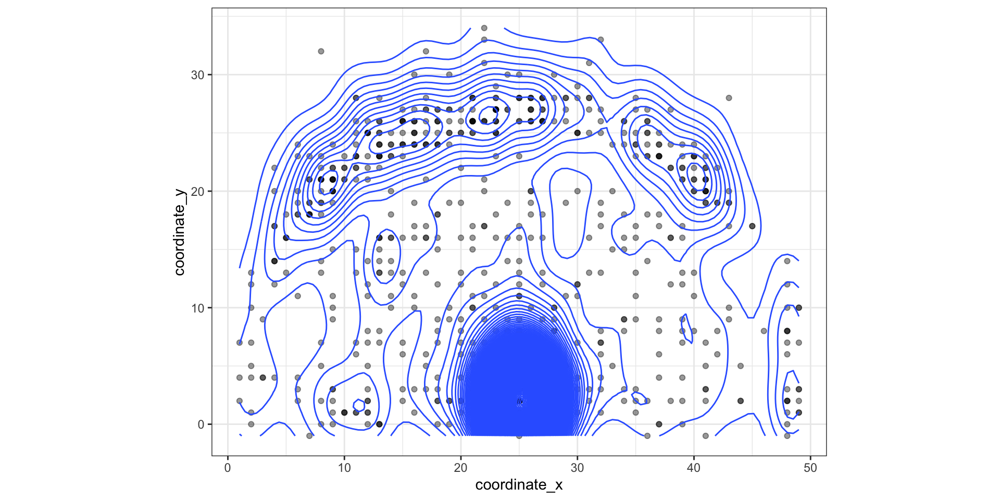
Recap and next steps
Use scatterplots to visualize 2D quantitative
Be careful of over-plotting! May motivate contours or hexagonal bins…
Discussed approaches for visualizing conditional relationships
HW2 is due TONIGHT!
HW3 is posted due next Wednesday Sept 18th
Next time: Into high-dimensional data
Recommended reading:
CW Chapter 12 Visualizing associations among two or more quantitative variables